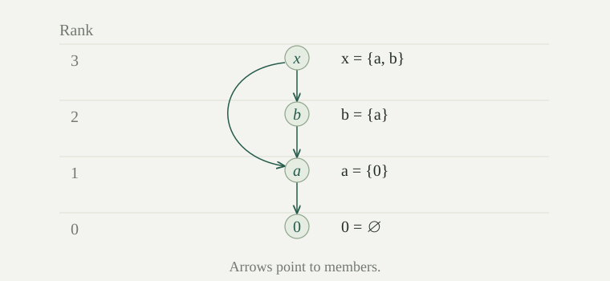

The Foundation axiom says that every nonempty set \(A\) contains a member \(a\) such that \(a\cap A=\varnothing\). This is a minimality condition for membership: no member of \(A\) is a member of \(a\). It does not require \(a\) to be empty, nor does it compare all members of \(A\) in a linear order.
In this entry we work in ZF, including Foundation, without Choice. We reuse ordinal comparison and suprema of sets of ordinals. These will measure how far membership descends, even when a set has infinitely many members.
No set belongs to itself. More generally, there is no finite nonempty list of sets \(x_0,\ldots,x_{n-1}\) with \(x_{i+1}\in x_i\) for successive positions and \(x_0\in x_{n-1}\).
Proof
If \(x\in x\), the nonempty set \(\{x\}\) has no membership-minimal member, contrary to Foundation. For a cycle, form the nonempty finite set \(A=\{x_0,\ldots,x_{n-1}\}\). Each member \(x_i\) contains the next member in the cycle, which also lies in \(A\). Thus no member has empty intersection with \(A\). Repeated entries do not change this argument. □
In particular, \(x\in y\) and \(y\in x\) cannot both hold. But membership still need not be transitive: with \(0=\varnothing\), \(a=\{0\}\), and \(b=\{a\}\), we have \(0\in a\in b\) but \(0\notin b\).
There is no function \(f\) on \(\omega\) with \(f(n+1)\in f(n)\) for every \(n\).
Proof
Replacement makes the range \(A=\{f(n):n\in\omega\}\) a nonempty set. If \(a=f(n)\in A\), then \(f(n+1)\in a\cap A\). Thus \(A\) has no membership-minimal member, contradicting Foundation. □
We proved this consequence directly. The reverse method of turning a failure of minimality into a descending sequence requires a principle for making successive selections: dependent choice suffices for relations on sets. We do not use it here.
A set \(T\) is transitive if \(y\in T\) implies \(y\subseteq T\), equivalently \(\bigcup T\subseteq T\). This is the transitive-set convention used for ordinals. It differs from transitivity of the relation \(\in\).
A transitive closure of a set \(x\) is the smallest transitive set containing \(x\) as a subset. We write it \(\operatorname{TC}(x)\). To include \(x\) itself as a member as well as all its descendants, use \(\operatorname{TC}(\{x\})\). These two expressions have different roles.
For example, \(T=\{0,\{0\},\{\{0\}\}\}\) is transitive. But the membership relation on \(T\) is not transitive, since \(0\in\{0\}\in\{\{0\}\}\) and \(0\notin\{\{0\}\}\).
For a set \(x\), recursively put
This is the unique smallest transitive superset of \(x\). No Choice or Foundation is needed for this construction.
Proof
Each step is a uniquely specified set by Pairing and Union. To justify the sequence even without an output bound fixed in advance, consider the finite histories of this rule. For each \(n\in\omega\), induction constructs a unique function on \(n+1\) beginning at \(x\) and satisfying the step equation. Restriction and uniqueness make these histories compatible. Replacement collects their uniquely determined last values as \(n\) varies, and also their input-output pairs; this constructs the sequence and its range as sets. Union then constructs \(\operatorname{TC}(x)\).
The sequence is increasing, so \(x\subseteq\operatorname{TC}(x)\). If \(y\in\operatorname{TC}(x)\), it belongs to some \(X_n\); every \(z\in y\) lies in \(\bigcup X_n\subseteq X_{n+1}\), hence in the closure. Thus the closure is transitive. If \(U\) is transitive and \(x\subseteq U\), induction gives \(X_n\subseteq U\) for every \(n\), so the union is contained in \(U\). This proves leastness and uniqueness. □
Put \(0=\varnothing\), \(a=\{0\}\), \(b=\{a\}\), and \(x=\{a,b\}\). Compute \(\operatorname{TC}(x)\) and \(\operatorname{TC}(\{x\})\). Also compute the closure of the empty set and the closure of a transitive set \(T\).
Starting from \(x=\{a,b\}\), one step adds \(0\), and the resulting \(\{0,a,b\}\) is transitive. Thus \(\operatorname{TC}(x)=\{0,a,b\}\). Starting from \(\{x\}\) also retains \(x\) itself, giving \(\operatorname{TC}(\{x\})=\{0,a,b,x\}\).
The empty set is transitive, so its closure is empty. More generally, leastness gives \(\operatorname{TC}(T)=T\) for transitive \(T\). The closure convention is a superset convention; it does not generally make \(x\) a member of \(\operatorname{TC}(x)\).
Let \(P(x)\) be any formula with fixed set parameters. If
then \(P(x)\) holds for every set \(x\). This is membership induction, also called set induction.
Proof
If \(P(a)\) fails, use \(D=\operatorname{TC}(\{a\})\), a transitive set with \(a\in D\). Separation constructs the nonempty set \(B=\{x\in D:\neg P(x)\}\). Foundation supplies \(b\in B\) with \(b\cap B=\varnothing\). Every member of \(b\) lies in \(D\), by transitivity, and none lies in \(B\); hence all satisfy \(P\). The assumed implication gives \(P(b)\), contradicting \(b\in B\). □
The collection of all counterexamples might be a proper class. The transitive closure provides the set-sized search space to which Foundation applies.
Over the other axioms of ZF, the membership-induction schema implies Foundation.
Proof
Suppose a nonempty set \(A\) has no membership-minimal member. Thus every \(x\in A\) has some \(y\in x\cap A\). Apply membership induction to the formula \(P(x)\) meaning \(x\notin A\), with parameter \(A\). If every member of \(x\) lies outside \(A\), then \(x\) cannot belong to \(A\), since a member of \(A\) has a member in \(A\). The induction hypothesis therefore gives \(x\notin A\) for every set \(x\), contradicting nonemptiness of \(A\). □
This equivalence compares an axiom with a schema: each application of induction concerns one formula and its parameters.
If \(T\) is a transitive set, there is a unique function \(r_T\) on \(T\) taking ordinal values and satisfying
The supremum of the empty set of ordinals is zero. Membership on \(T\) is well-founded by Foundation, and transitivity ensures that all inputs on the right are in the domain.
Proof
Call an ordinal-valued function good if its domain is a transitive subset of \(T\) and it satisfies the displayed rule there. Two good functions agree on their common domain. Otherwise, by Separation and Foundation, their disagreements have a membership-minimal member \(x\). Every \(y\in x\) lies in both domains and is an agreement point, so the two suprema at \(x\) are equal, a contradiction. This proves compatibility, including uniqueness on any fixed domain.
We show that every \(x\in T\) is in the domain of a good function, by well-founded induction on membership in \(T\). Suppose this has been established for every \(y\in x\). Put \(D_y=\operatorname{TC}(\{y\})\). Any good function containing \(y\) restricts to a good function on \(D_y\), by leastness of the transitive closure. Compatibility makes that restricted function unique; denote it \(f_y\).
Replacement, applied to the uniquely specified graphs \(f_y\) for \(y\in x\), gives a set of functions. Their union \(f\) is a function because they agree on overlaps. Its domain \(D=\bigcup_{y\in x}D_y\) is transitive and contains every member of \(x\), and \(f\) is good there. If \(x\in D\), we already have the desired function. Otherwise extend \(f\) by assigning \(x\) the ordinal \(\sup\{f(y)+1:y\in x\}\). Replacement makes the set of ordinal values exist. The enlarged domain \(D\cup\{x\}\) is transitive. No old point of \(D\) has \(x\) as a member, since transitivity would force \(x\in D\); thus its old recursion equation is unchanged. This extension is good and includes \(x\).
Induction establishes the assertion for all \(x\in T\). The unique good function on each \(D_x\) now exists, so a further application of Replacement collects all their graphs. Their compatible union is the required function on \(T\). Compatibility proves uniqueness. For \(T=\varnothing\), the construction gives the empty function. □
This proof does not assume a set of all ordinals as codomain. It constructs each value locally, then uses Replacement to collect the values on a set.
For a set \(x\), define
If \(U,T\) are transitive sets containing \(x\) as a member, their rank functions agree on \(U\cap T\) by the compatibility proof above. Also, \(\operatorname{TC}(\{x\})\subseteq U\), and restriction of \(r_U\) gives its unique local function. Thus the value is independent of the carrier. In particular, it satisfies the global rule
This is a definable class function: it gives exactly one ordinal for each set. Its values on any set-sized domain form a set by Replacement. We have not made a set containing all input-output pairs.
If \(y\in x\), then \(\operatorname{rank}(y)<\operatorname{rank}(x)\). If \(x\subseteq z\), then \(\operatorname{rank}(x)\le\operatorname{rank}(z)\). A set has rank zero exactly when it is empty.
Proof
For \(y\in x\), the supremum defining rank is at least \(\operatorname{rank}(y)+1\), hence strictly above \(\operatorname{rank}(y)\). For \(x\subseteq z\), the family used in the first supremum is contained in the family used in the second, giving the non-strict comparison. The empty set has rank zero by the empty-supremum convention; a nonempty set has a member, whose successor rank is at least one, so its rank is not zero. □
Inclusion need not strictly increase rank. The sets \(a=\{0\}\) and \(b=\{a\}\) have ranks one and two. Both \(\{b\}\) and its proper superset \(\{0,b\}\) have rank three. Rank measures membership depth, not how many members have been added.

For any sets \(x,y\),
Proof
The singleton and pair formulas substitute their members into the recursion equation. The union formula follows by grouping the same successor ranks:
All indexed collections are sets by Replacement and Union; the equality also holds for empty indices, with supremum zero. Every \(A\subseteq x\) has rank at most \(\operatorname{rank}(x)\), so the supremum defining the rank of \(\mathcal P(x)\) is at most \(\operatorname{rank}(x)+1\). Since \(x\in\mathcal P(x)\), this very successor rank occurs in that supremum. Equality follows. □
The \(+1\) in these formulas is ordinal successor. In particular, \(\operatorname{rank}(\mathcal P(\varnothing))=1\), even though its only member is empty.
For every ordinal \(\alpha\), \(\operatorname{rank}(\alpha)=\alpha\). In particular, natural numbers have their own finite ranks and \(\operatorname{rank}(\omega)=\omega\).
Proof
Use transfinite induction on ordinals. Their members are exactly the earlier ordinals, so the induction hypothesis gives
Every \(\beta+1\) in this family is at most \(\alpha\), while each \(\gamma<\alpha\) belongs to the successor \(\gamma+1\) occurring in the family. Thus its union, and hence its supremum, is precisely \(\alpha\). At zero both are empty. □
For every set \(x\), \(\operatorname{rank}(\operatorname{TC}(x))=\operatorname{rank}(x)\).
Proof
The union formula gives \(\operatorname{rank}(\bigcup u)\le\operatorname{rank}(u)\) for any set \(u\), since each member rank is at most the supremum of its successor ranks. Also, \(\operatorname{rank}(u\cup v)=\max(\operatorname{rank}(u),\operatorname{rank}(v))\), by splitting the family of successor ranks into its two parts. Hence the stages in all have rank \(\operatorname{rank}(x)\), by induction. Applying the union formula to their nonempty set of stages gives the rank of their union as \(\operatorname{rank}(x)\). □
Consequently \(\operatorname{TC}(\{x\})\) has rank \(\operatorname{rank}(x)+1\), in agreement with the fact that it contains \(x\) as a member.
Let \(R\) be a relation on a set \(A\). Suppose each \(a\in A\) is assigned an ordinal \(h(a)\), with \(b\,R\,a\) implying \(h(b)<h(a)\). Then \(R\) is well-founded on \(A\).
Proof
For a nonempty subset \(B\subseteq A\), Replacement gives the nonempty set \(\{h(b):b\in B\}\) of ordinals. Take its least member and some \(b\in B\) having that value. There cannot be \(c\in B\) with \(c\,R\,b\), since \(h(c)\) would be smaller. Thus \(B\) has an \(R\)-minimal member. No simultaneous selection over all subsets is needed. □
Membership rank supplies such a height on every set of sets. For a general relation the height has domain its carrier \(A\), rather than automatically all sets.
Compare the cardinalities and ranks of \(\omega\), \(\{\omega\}\), and \(\{\{\omega\}\}\). Can a singleton have arbitrarily large rank?
The ranks are \(\omega\), \(\omega+1\), and \(\omega+2\). The first set is countably infinite; the other two each have one member. More generally, for any ordinal \(\alpha\), the singleton \(\{\alpha\}\) has cardinality one and rank \(\alpha+1\). Thus singleton ranks are unbounded among the ordinals. Cardinality counts members, while rank measures the depth of their membership structure.